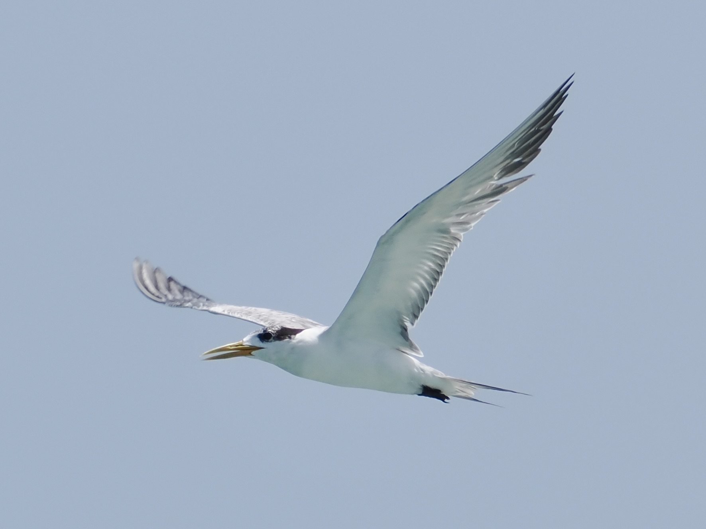
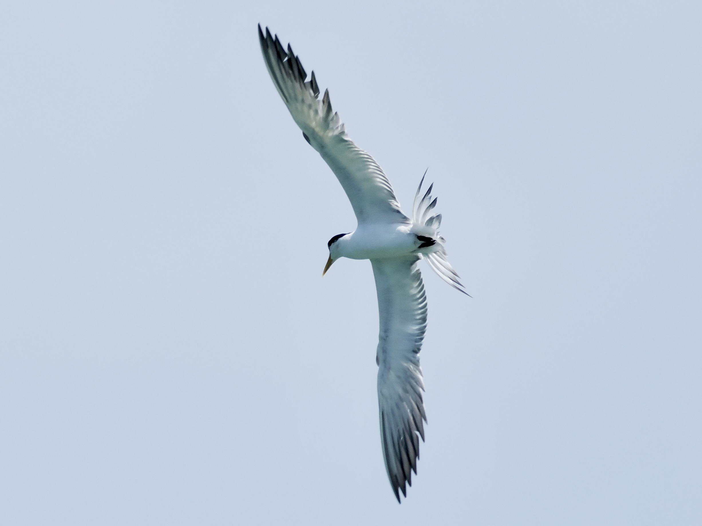

Great Crested Tern
Thalasseus bergii
Order: Charadriiformes
Family: Laridae

Large tern with black cap and yellow bill.

Just look at this wingspan!
Order: Charadriiformes
Family: Laridae

Large tern with black cap and yellow bill.

Just look at this wingspan!